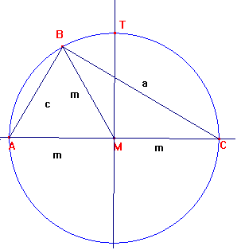
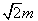
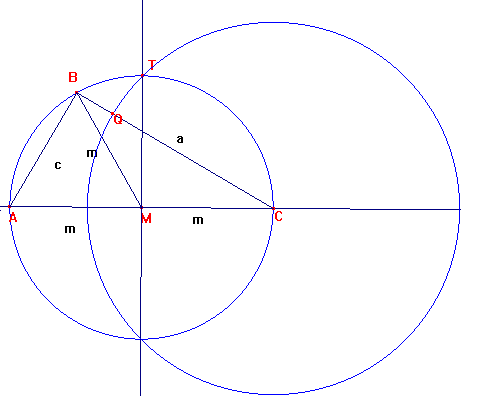
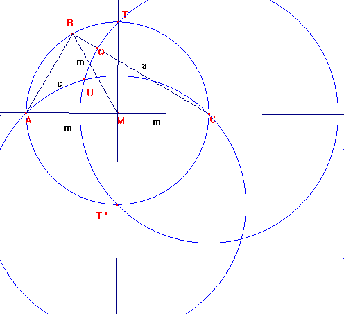

Solución del problema 60
| Construya un triángulo rectángulo con hipotenusa dada tal que la mitad de la longitud de la misma sea la media geométrica de sus catetos. |
Primera Olimpíada Matemática Internacional Brasov. Rumanía 1959. Segundo día. Problema 4

Sea ABC el triángulo con ángulo recto en B. Sea M el centro de la circunferencia circunscrita.
Se pide que BM*BM=AB*BC, m * m = c * a.
Tenemos que: a * a + c * c = b * b = 4 * m* m, por Pitágoras.
Luego, para cumplirse las condiciones del problema, a * a - 2* a * c + c * c = 2 * m * m,
Es decir, (a-c) * (a-c) = 2 * m * m, de donde deberá ser: a - c =

, y a -=cTrazamos la circunferencia de centro C y radio CT= , tomando T como el punto de corte
de la circunferencia circunscrita con la perpendicular a CM por M.

Dicha circunferencia cortará en Q al lado BC, Luego es CQ=, y deseamos por tanto que
BQ = a- = c= BA. Luego ABQ debe ser isósceles.
Tenemos que < ABQ = 90º, luego < BQA= < BAQ=45º. Luego < AQC= 135º.
Trazando por T`, diametralmente opuesto a T la circunferencia de radio T'C, cortará a la circunfrencia
de centro C y radio CT en U. La solución del problema deberá ser con el cateto CB conteniendo a U.

El motivo es que el ángulo AT'C mide 270º y la circunferencia de centro T' y radio T'C abarca ángulos de 135º,
como pretendemos.
Ricardo Barroso Campos. Editor del Laboratorio de Triángulos con Cabri